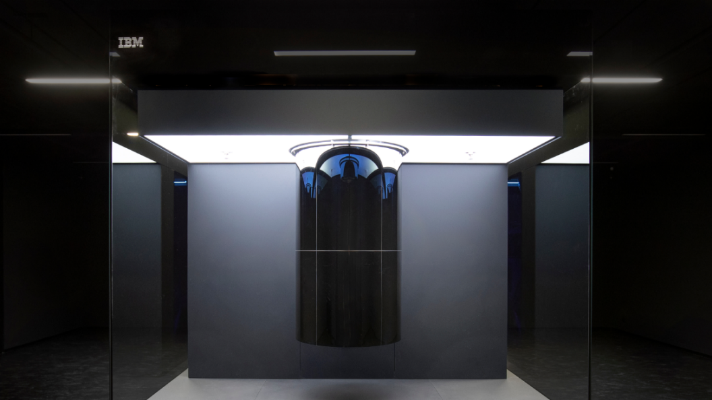

Computação Quântica é a utilização de propriedades de sistemas quânticos, tais como o entrelaçamento quântico e a superposição de estados, para realizar cálculos e resolver problemas. Para realizar esses cálculos utilizamos um Computador Quântico, que pode ser construído de diversas maneiras, cada uma com sua especialidade. Esse tópico é abordado com mais profundidade no post “Tipos de Computadores Quânticos” desse mesmo blog, o qual recomendo a leitura.
Os bits da Computação Quântica são chamados de qubits e podem assumir o valor zero, um, ou qualquer combinação entre eles durante o cálculo de operações lógicas. Diferentemente, na Computação Clássica os bits podem assumir apenas dois valores (0 ou 1), de maneira única e discretizada durante todos os cálculos que são feitos. Isso acontece pois o qubit se encontra em uma superposição dos dois possíveis estados até que seja feita uma medida direta e seu estado verdadeiro determinado.
